2030 타겟
신규 앱 출시
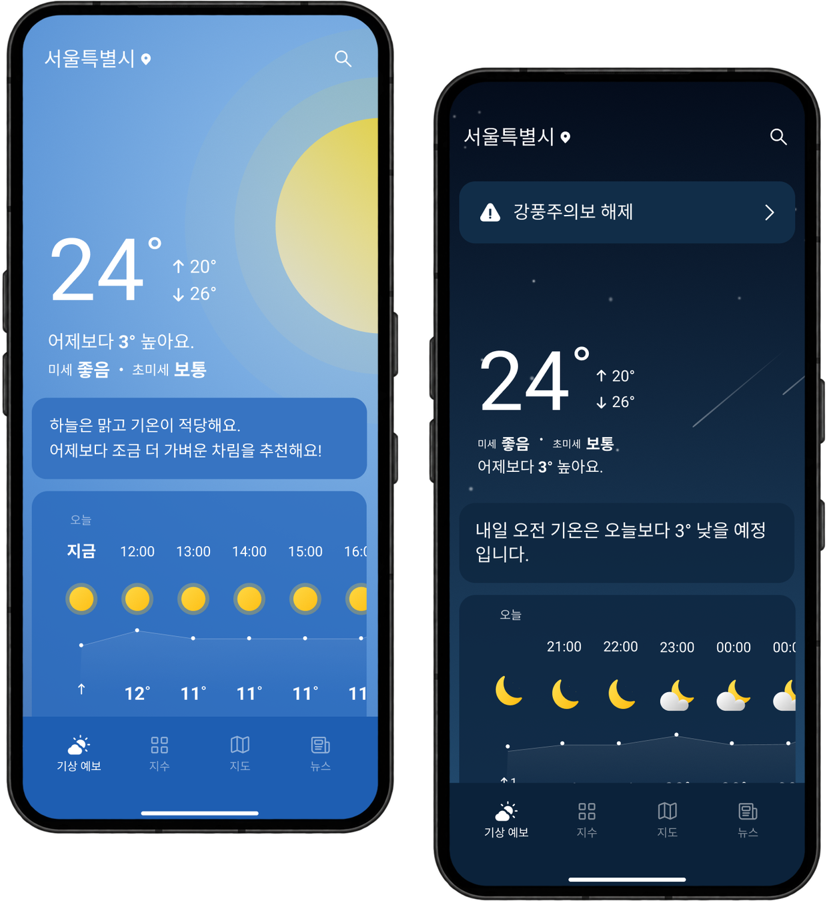
기존 서비스의 사용자층을 넓히기 위한
신규 날씨 앱 출시
기존 서비스의 사용자층과 다른 새로운 타깃을 확보하고,
서비스의 성장과 수익 경로를 확장하기 위해 신규 앱을 기획했습니다.
2030 유저가 필요했다
20~30대는 모바일 앱 체류시간이 전 연령대 중 가장 길고 확산력도 큰 세대입니다. 다음 성장 축을 만들려면 반드시 확보해야 할 시장이었습니다.
'첫화면날씨'로는 키울 수 없었다.
'첫화면날씨'는 많은 정보를 한 화면에 담는 구조로, 40~50대에 최적화돼 있습니다. 20~30대가 원하는 직관적 구조와는 방향이 달랐습니다.
수정하기엔 반발이 컸다.
'첫화면날씨'는 400만 DAU를 가진 서비스입니다. 전체 사용자의 10%를 대상으로 정렬 변경안을 A/B 테스트했을 때, 리텐션 하락과 부정 리뷰 증가가 함께 확인됐습니다.
그래서, '지금날씨' MVP
'첫화면날씨'는 그대로 유지하고, 20~30대만을 위한 별도 앱을 MVP로 빠르게 출시해 시장성부터 증명하기로 했습니다.
2030을 잡으려면 어떤 앱을 만들어야 할까?
기존 '첫화면날씨'의 사용 데이터로 사람들이 날씨 앱을 언제·왜 쓰는지 파악하고,
20~30대 인터뷰를 통해 이들이 실제로 기대하는 것이 무엇인지 확인했습니다.
언제 · 왜 날씨를 확인하는가
확인 목적의 45%가 "외출 전 판단" — 정보 열람이 아니라 행동 결정을 위해 사용
얼마나 자주 쓰는가
매일 사용률 72%, 아침 집중 60% 바쁜 시간대에 빠르게 판단해야 하는 시간대 자주 사용
-
01
기온으로 옷차림을 바로 판단하고 싶어요.체감 중심
"숫자보다, 오늘 뭘 입어야 할지 그것만 알려주면 좋겠어요."
-
02
시간대별 강수 여부를 빠르게 확인하고 싶어요.시간대별
"오후에 비 온다는 걸 아침에 미리 알려줬으면 해요."
-
03
미세먼지·자외선 생활 정보를 한눈에 보고 싶어요.생활 밀착
"흩어져 있으면 결국 안 보게 되더라고요."
-
04
수치 없이 바로 행동을 결정하고 싶어요.직관적
"해석하는 게 귀찮아요. 결론만 있으면 좋겠어요."
-
05
필요한 순간에 알아서 알려줬으면 좋겠어요.선제 알림
"매번 앱을 여는 게 번거로워요. 중요할 때만 먼저 알려주면 좋겠어요."
사용자의 45%가 외출 전 날씨를 확인하며, 체감·시간대별·생활 밀착 정보를 필요로 했습니다.
20~30대를 위한 날씨 앱 설계 방향
복잡한 수치 대신 날씨 배경과 한 줄 요약, 3개 탭 구조를 통해 최소한의 이동만으로 상황을 빠르게 파악하도록
개인 맞춤형 선제 알림을 더해, 앱을 열지 않고도 매일 자연스럽게 날씨를 확인하는 습관을 만들어 낼 수 있도록 설계했습니다.
한눈에 파악하는 오늘의 날씨
사용자가 앱을 여는 순간 오늘의 날씨를 직관적으로 파악할 수 있도록,
직접 해석하게 하기보다, 정보의 선택과 집중으로 최소 요소만 빠르게 체감하도록 구성했습니다.
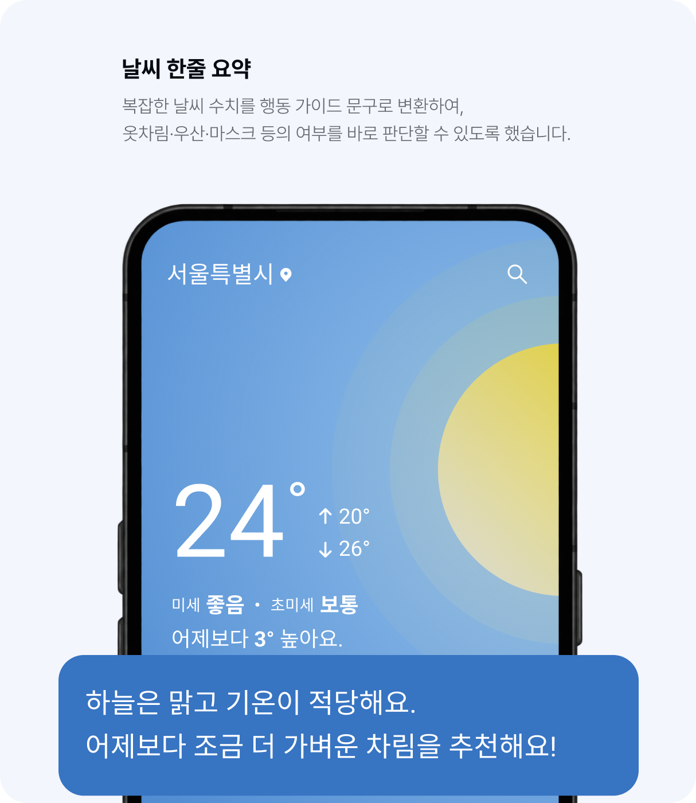
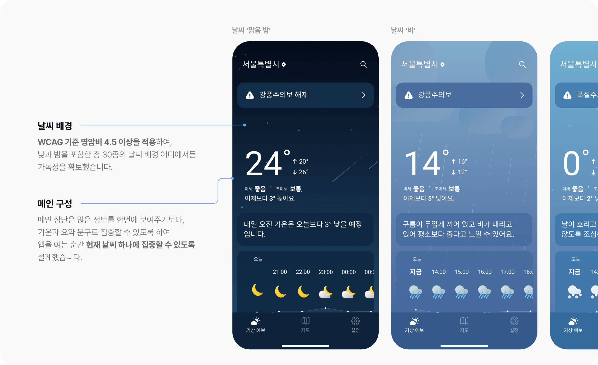
메인은 가볍게, 상세는 깊게
기존 '첫화면 날씨'는 한 스크롤에 모든 정보를 담아 뎁스는 적지만 탐색이 복잡했습니다.
'지금날씨'는 날씨 정보를 사용 목적별로 분류하고, 뎁스가 있어도 뒤로 돌아갈 필요 없이 세부 정보에 바로 도달할 수 있는 이동 경로를 설계했습니다.
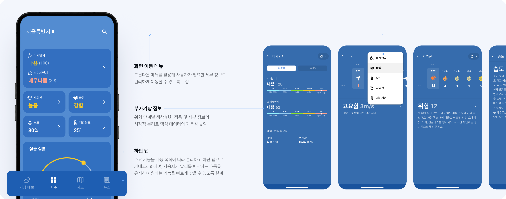
필요한 순간에 전하는 맞춤 날씨 알림
사용자의 시간대와 위치에 맞춰 필요한 순간에만 날씨를 전달하여 앱 사용 빈도를 높였고,
날씨 상태에 우선순위를 두어 그로 인해 중요한 정보가 가장 먼저 눈에 들어오도록 구성했습니다.
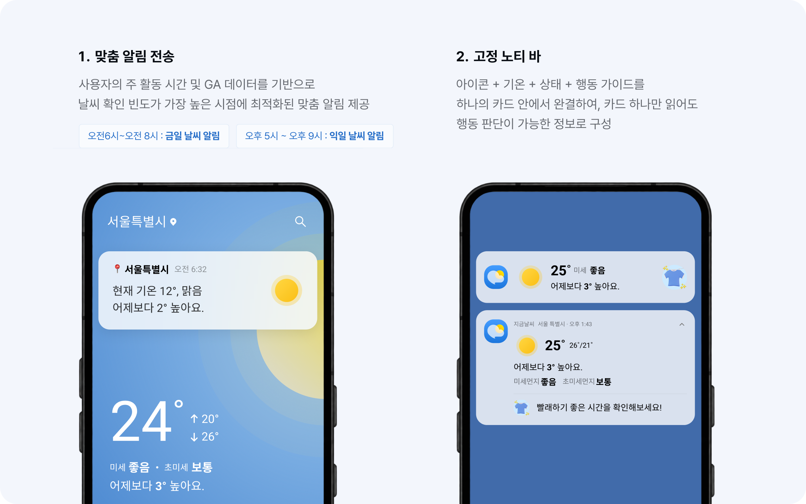
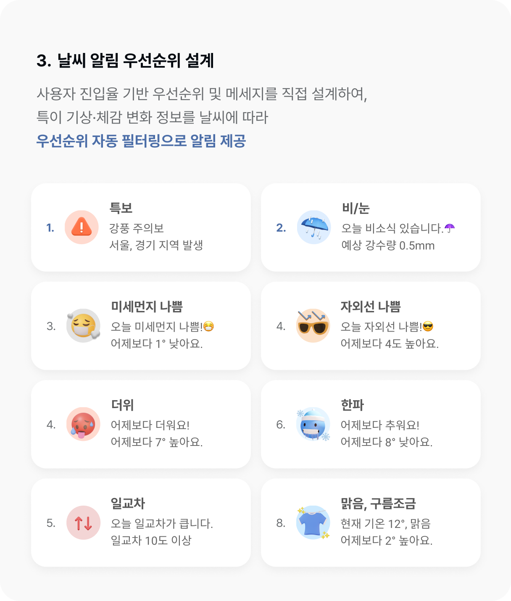
낮과 밤에 따라 달라지는 날씨 배경·아이콘 등 날씨 화면의 특성을 컬러·타이포그래피·스페이싱·아이콘 토큰으로 정의하고, 이를 조합해 날씨 그래프·시간별/주간 예보 카드 등 핵심 컴포넌트까지 하나의 체계로 설계했습니다. 디자인과 개발이 같은 규격을 공유하도록 설계해, 별도 변환 없이 바로 협업할 수 있는 환경을 만들었습니다.
Color 5그룹 · 38색
Basic 10
Primary 4
Error 5
Index 9
Weather Bg 10
Weather Icon 17종
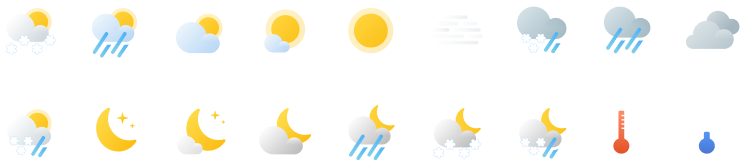
Basic Icon 30종
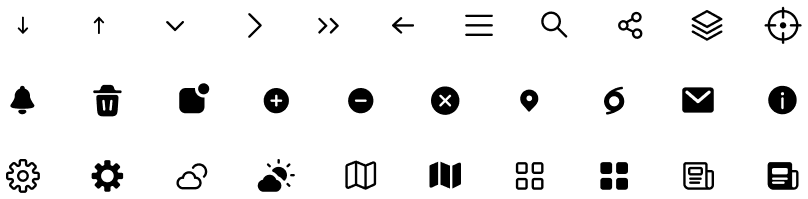
Humidity · Wind
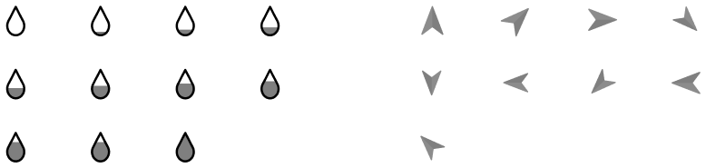
Weather bg 30종
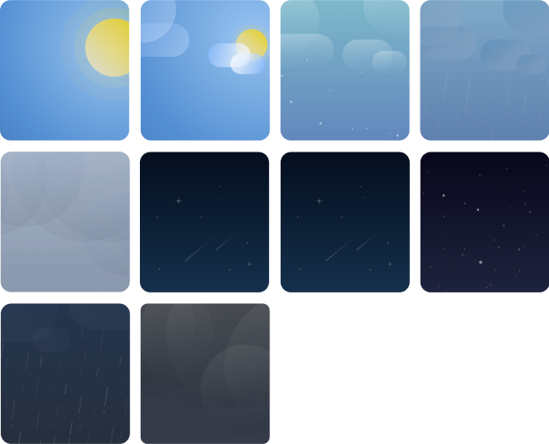
Typography Roboto · 8단
display / temp
Roboto Bold · 64 / 1.05
title / page
Roboto Bold · 24 / 1.35
title / card
Roboto Bold · 18 / 1.4
body / default
Roboto Regular · 16 / 1.6
label / meta
Roboto Regular · 12 / 1.5
더 빠르게 확인할 수 있어요!
첫화면 사용을 중지하시겠어요?
좋음23
보통45
하늘은 맑고 기온이 적당해요.
어제보다 조금 더 가벼운 차림을 추천해요!
구름이 두껍게 끼어 있고 비가 내리고 있어
평소보다 춥다고 느낄 수 있어요.
날씨를 읽지 않고
보게 하다.
수치 해석 없이 배경·요약 문구만으로
오늘의 행동을 결정할 수 있는 화면을
완성했습니다.
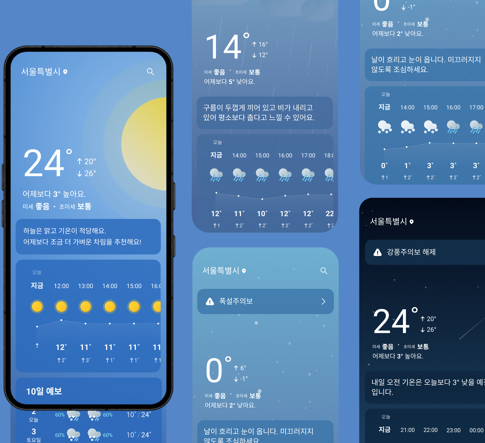
측정 · 서비스 출시~2024.11
Google Play 기준
3개월 누적 다운로드 수
서비스 출시~2024.11, 지속 성장 추세
신규 앱 40·50대 비율 변화
첫화면날씨(기존) 62.5% → 지금날씨(신규) 58%
20·30대 실제 유입
목표 60% 대비 목표치 하회
타겟 연령이 아닌,
직관성과 가독성이 핵심이었다.
핵심 니즈는 연령이 아닌 정보의 형태에 있었습니다.
직관적 구조는 모든 사용자에게 유효한 가치였습니다.
1차 타겟 확보 실패가
품질의 기준을 바꾸다.
목표했던 2030 확보에는 닿지 못했지만,
'읽기 쉬운 디자인'에 대한 전 세대의 니즈를 확인했습니다.
연령이 아닌 '정보 전달의 직관성'에 집중해 최종 서비스의
완성도를 높였습니다.
놓친 목표가 남긴 방향이
더 강한 제품을 만든다.
기상 데이터를 사용자 중심으로 재설계하며,
직관적으로 이해하고 빠르게 대비할 수 있는 날씨 경험을
완성했습니다.